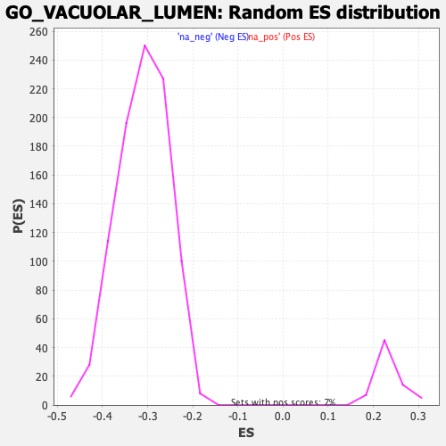

| | | Dataset | DE_genes2 |
| Phenotype | NoPhenotypeAvailable |
| Upregulated in class | na_pos |
| GeneSet | GO_VACUOLAR_LUMEN |
| Enrichment Score (ES) | 0.52318233 |
| Normalized Enrichment Score (NES) | 2.2419121 |
| Nominal p-value | 0.0 |
| FDR q-value | 0.001428557 |
| FWER p-Value | 0.006 |
Table: GSEA Results Summary
 Fig 1: Enrichment plot: GO_VACUOLAR_LUMEN
Fig 1: Enrichment plot: GO_VACUOLAR_LUMEN
Profile of the Running ES Score & Positions of GeneSet Members on the Rank Ordered List
| PROBE | GENE SYMBOL | GENE_TITLE | RANK IN GENE LIST | RANK METRIC SCORE | RUNNING ES | CORE ENRICHMENT | | 1 | ANXA2 | | | 4 | 16.394 | 0.0662 | Yes |
| 2 | VAT1 | | | 98 | 6.124 | 0.0854 | Yes |
| 3 | GPC6 | | | 111 | 5.859 | 0.1084 | Yes |
| 4 | S100A7 | | | 121 | 5.749 | 0.1312 | Yes |
| 5 | CAP1 | | | 142 | 5.552 | 0.1525 | Yes |
| 6 | GLB1 | | | 167 | 5.282 | 0.1725 | Yes |
| 7 | DPP7 | | | 253 | 4.656 | 0.1862 | Yes |
| 8 | CTSB | | | 269 | 4.585 | 0.2038 | Yes |
| 9 | NAGLU | | | 322 | 4.327 | 0.2182 | Yes |
| 10 | PLBD2 | | | 351 | 4.217 | 0.2336 | Yes |
| 11 | HSPG2 | | | 392 | 4.031 | 0.2475 | Yes |
| 12 | ACP2 | | | 408 | 3.950 | 0.2626 | Yes |
| 13 | UNC13D | | | 428 | 3.885 | 0.2772 | Yes |
| 14 | GBA | | | 443 | 3.854 | 0.2920 | Yes |
| 15 | CTSA | | | 503 | 3.703 | 0.3034 | Yes |
| 16 | CYB5R3 | | | 558 | 3.546 | 0.3145 | Yes |
| 17 | GAA | | | 648 | 3.309 | 0.3225 | Yes |
| 18 | ATP13A2 | | | 672 | 3.266 | 0.3344 | Yes |
| 19 | IST1 | | | 726 | 3.154 | 0.3439 | Yes |
| 20 | MAN2B1 | | | 736 | 3.134 | 0.3561 | Yes |
| 21 | SERPINA3 | | | 761 | 3.097 | 0.3672 | Yes |
| 22 | SMPD1 | | | 791 | 3.059 | 0.3778 | Yes |
| 23 | GUSB | | | 803 | 3.045 | 0.3895 | Yes |
| 24 | LGMN | | | 818 | 3.014 | 0.4009 | Yes |
| 25 | HEXA | | | 858 | 2.926 | 0.4104 | Yes |
| 26 | VCAN | | | 1131 | 2.567 | 0.4042 | Yes |
| 27 | ARSA | | | 1132 | 2.566 | 0.4146 | Yes |
| 28 | CHID1 | | | 1176 | 2.498 | 0.4221 | Yes |
| 29 | C3 | | | 1250 | 2.415 | 0.4274 | Yes |
| 30 | MAN2B2 | | | 1402 | 2.268 | 0.4274 | Yes |
| 31 | GALNS | | | 1451 | 2.222 | 0.4335 | Yes |
| 32 | STK11IP | | | 1481 | 2.197 | 0.4406 | Yes |
| 33 | CTSC | | | 1504 | 2.173 | 0.4481 | Yes |
| 34 | GRN | | | 1505 | 2.173 | 0.4569 | Yes |
| 35 | SGSH | | | 1528 | 2.154 | 0.4643 | Yes |
| 36 | CTSS | | | 1570 | 2.115 | 0.4704 | Yes |
| 37 | GNS | | | 1670 | 2.020 | 0.4726 | Yes |
| 38 | PYGB | | | 1714 | 1.980 | 0.4780 | Yes |
| 39 | AGRN | | | 1788 | 1.925 | 0.4813 | Yes |
| 40 | HYAL1 | | | 1789 | 1.925 | 0.4891 | Yes |
| 41 | HEBP2 | | | 1881 | 1.857 | 0.4911 | Yes |
| 42 | PADI2 | | | 1914 | 1.823 | 0.4965 | Yes |
| 43 | SDC4 | | | 1965 | 1.784 | 0.5007 | Yes |
| 44 | NPC2 | | | 1985 | 1.766 | 0.5067 | Yes |
| 45 | IFI30 | | | 1993 | 1.760 | 0.5134 | Yes |
| 46 | TCN2 | | | 2304 | 1.558 | 0.5009 | Yes |
| 47 | LYZ | | | 2414 | 1.483 | 0.5002 | Yes |
| 48 | IDUA | | | 2527 | 1.429 | 0.4992 | Yes |
| 49 | TOLLIP | | | 2617 | 1.378 | 0.4993 | Yes |
| 50 | PYCARD | | | 2656 | 1.361 | 0.5025 | Yes |
| 51 | CSPG4 | | | 2738 | 1.312 | 0.5029 | Yes |
| 52 | BPI | | | 2798 | 1.285 | 0.5045 | Yes |
| 53 | GPC4 | | | 2817 | 1.278 | 0.5086 | Yes |
| 54 | AZU1 | | | 2837 | 1.271 | 0.5126 | Yes |
| 55 | SDC3 | | | 2958 | 1.213 | 0.5102 | Yes |
| 56 | CTSD | | | 2961 | 1.212 | 0.5150 | Yes |
| 57 | PRKCD | | | 2979 | 1.204 | 0.5189 | Yes |
| 58 | SDC1 | | | 2989 | 1.200 | 0.5232 | Yes |
| 59 | FRK | | | 3230 | 1.101 | 0.5130 | No |
| 60 | TPP1 | | | 3300 | 1.075 | 0.5132 | No |
| 61 | CD74 | | | 3387 | 1.043 | 0.5121 | No |
| 62 | PSAP | | | 3486 | 1.010 | 0.5103 | No |
| 63 | FUCA1 | | | 3517 | 0.999 | 0.5125 | No |
| 64 | GPC1 | | | 3578 | 0.979 | 0.5128 | No |
| 65 | GM2A | | | 3834 | 0.885 | 0.5008 | No |
| 66 | CTSF | | | 3923 | 0.861 | 0.4990 | No |
| 67 | DYNC1H1 | | | 3996 | 0.838 | 0.4980 | No |
| 68 | VCP | | | 3997 | 0.838 | 0.5014 | No |
| 69 | PLAC8 | | | 4423 | 0.714 | 0.4783 | No |
| 70 | SDC2 | | | 4547 | 0.678 | 0.4736 | No |
| 71 | SCARB2 | | | 4635 | 0.654 | 0.4709 | No |
| 72 | CPPED1 | | | 4953 | 0.581 | 0.4540 | No |
| 73 | RNASET2 | | | 5293 | 0.494 | 0.4353 | No |
| 74 | PTGES2 | | | 5353 | 0.480 | 0.4336 | No |
| 75 | GPC2 | | | 5364 | 0.476 | 0.4350 | No |
| 76 | ASAH1 | | | 5435 | 0.463 | 0.4326 | No |
| 77 | TUBB | | | 5614 | 0.424 | 0.4234 | No |
| 78 | TUBB4B | | | 5933 | 0.359 | 0.4055 | No |
| 79 | DAPK2 | | | 6161 | 0.314 | 0.3929 | No |
| 80 | NEU4 | | | 6223 | 0.298 | 0.3904 | No |
| 81 | MANBA | | | 6267 | 0.292 | 0.3890 | No |
| 82 | LAMP2 | | | 6343 | 0.277 | 0.3855 | No |
| 83 | FABP5 | | | 6357 | 0.273 | 0.3858 | No |
| 84 | ARSB | | | 6395 | 0.264 | 0.3846 | No |
| 85 | SERPINB3 | | | 6655 | 0.213 | 0.3697 | No |
| 86 | LIPA | | | 6735 | 0.195 | 0.3657 | No |
| 87 | BGN | | | 6776 | 0.189 | 0.3640 | No |
| 88 | FMOD | | | 7002 | 0.155 | 0.3509 | No |
| 89 | NSG1 | | | 7007 | 0.154 | 0.3513 | No |
| 90 | FAF2 | | | 7058 | 0.144 | 0.3488 | No |
| 91 | IDS | | | 7418 | 0.079 | 0.3273 | No |
| 92 | TRAPPC1 | | | 7465 | 0.071 | 0.3247 | No |
| 93 | NHLRC3 | | | 7501 | 0.065 | 0.3229 | No |
| 94 | GCA | | | 7566 | 0.054 | 0.3192 | No |
| 95 | ACTR10 | | | 8107 | -0.028 | 0.2864 | No |
| 96 | FUCA2 | | | 8193 | -0.040 | 0.2814 | No |
| 97 | NAAA | | | 8516 | -0.096 | 0.2621 | No |
| 98 | GPC3 | | | 8627 | -0.115 | 0.2559 | No |
| 99 | GYG1 | | | 8684 | -0.127 | 0.2530 | No |
| 100 | SERPINB13 | | | 8783 | -0.150 | 0.2476 | No |
| 101 | CUBN | | | 8840 | -0.159 | 0.2448 | No |
| 102 | HSPA8 | | | 8959 | -0.184 | 0.2384 | No |
| 103 | MAPK1 | | | 9065 | -0.206 | 0.2328 | No |
| 104 | CTSK | | | 9124 | -0.220 | 0.2302 | No |
| 105 | NAPRT | | | 9323 | -0.270 | 0.2192 | No |
| 106 | PRDX6 | | | 9563 | -0.329 | 0.2059 | No |
| 107 | GDI2 | | | 9759 | -0.388 | 0.1956 | No |
| 108 | HRNR | | | 9760 | -0.388 | 0.1972 | No |
| 109 | AGA | | | 9854 | -0.416 | 0.1932 | No |
| 110 | ACLY | | | 10995 | -0.800 | 0.1269 | No |
| 111 | HEXB | | | 11052 | -0.824 | 0.1268 | No |
| 112 | GLA | | | 11103 | -0.842 | 0.1272 | No |
| 113 | CTSV | | | 11183 | -0.874 | 0.1259 | No |
| 114 | GALC | | | 11252 | -0.902 | 0.1254 | No |
| 115 | CSPG5 | | | 11559 | -1.031 | 0.1110 | No |
| 116 | IMPDH1 | | | 11563 | -1.032 | 0.1150 | No |
| 117 | TXNDC5 | | | 11648 | -1.064 | 0.1142 | No |
| 118 | PPT1 | | | 11690 | -1.082 | 0.1161 | No |
| 119 | LUM | | | 11809 | -1.136 | 0.1135 | No |
| 120 | PSMD1 | | | 11816 | -1.140 | 0.1177 | No |
| 121 | SDCBP | | | 11925 | -1.187 | 0.1159 | No |
| 122 | PA2G4 | | | 12113 | -1.278 | 0.1097 | No |
| 123 | CCT2 | | | 12360 | -1.408 | 0.1004 | No |
| 124 | DNAJC3 | | | 12486 | -1.469 | 0.0988 | No |
| 125 | CREG1 | | | 12809 | -1.653 | 0.0858 | No |
| 126 | EPDR1 | | | 12947 | -1.742 | 0.0845 | No |
| 127 | FTL | | | 12965 | -1.748 | 0.0906 | No |
| 128 | BCAN | | | 13637 | -2.192 | 0.0586 | No |
| 129 | CCT8 | | | 13769 | -2.300 | 0.0599 | No |
| 130 | HPSE | | | 13773 | -2.302 | 0.0691 | No |
| 131 | HSP90AA1 | | | 13840 | -2.364 | 0.0746 | No |
| 132 | DSN1 | | | 13907 | -2.424 | 0.0804 | No |
| 133 | CTSL | | | 14760 | -3.315 | 0.0419 | No |
| 134 | GGH | | | 15362 | -4.223 | 0.0224 | No |
| 135 | ACTR2 | | | 15753 | -5.013 | 0.0189 | No |
| 136 | C6orf120 | | | 16327 | -7.018 | 0.0124 | No |
Table: GSEA details [plain text format]

Fig 2: GO_VACUOLAR_LUMEN: Random ES distribution
Gene set null distribution of ES for GO_VACUOLAR_LUMEN